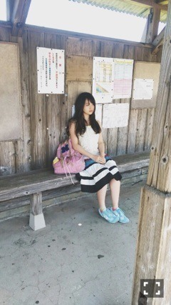
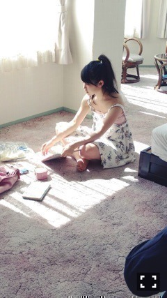
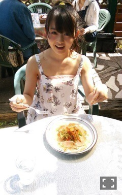
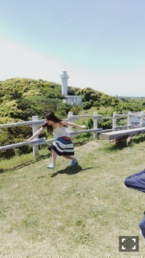

| 2015/06 02 Tue | マイカルパッチョ。 645回目 |
こないだ仕事の合間に
飛鳥とマグリット展行った〜
前から約束してたもんね＼(^o^)／
妙に惹かれるなと思ったら
何かがおかしくて
なんかもう夢中でした。
石化した魚人間の作品が
印象的でした。デペイズマン！
ダダイズム、シュレアリスムが
好きなので勉強してて楽しい。

今日はGザテレビジョン発売日！
2度目ましてです。
今回は裏表紙にいます＼(^o^)／

九十九里まで行ったよ〜
やっぱりこういう撮影が
いちばん自然体でいられるなあ
夏の撮影すき！

今回は仲良しのさゆと日芽香の
ソログラビアも一緒に掲載されてて、
インタビューの内容も
より濃くなりました。
3人分一気に読んでね！
映画についても話してます。

雑誌掲載
6月2日 Gザテレビジョン
6月7日 MdN新連載
6月9日 UTB＋
6月10日 FINEBOYS
6月12日 CUTiE連載
6月20日 月刊ヤングマガジン
今月から連載がふたつに（≧∇≦）
楽しみにしててねー
今は制作とじょしらくの稽古
頑張ってます。
それプラス、舞台挨拶で
いろんなところまわるよ！
映画「アイズ」
◎公式サイト
◎予告編
◎主題歌 teenAge dream/SuG
かっこいい歌と共に
予告編をご覧ください(^o^)
本編に近いです。
◎6月5日にニコニコ生放送で
映画公開直前スペシャル
◎舞台挨拶
6月6日 イオンシネマ板橋/イオンシネマ港北ニュータウン/イオンシネマみなとみらい
6月9日 なんばパークスシネマ
6月13日 イオンシネマ板橋/イオンシネマ春日部/イオンシネマ幕張
6月14日 中川コロナ
試写会の感想ありがとうございます。
みなさんからの声を励みに
夏バテしないぞ！がんばる！
たくさんの方に
観てもらえますように。
公開日の6日は板橋の他、
港北ニュータウンと
みなとみらいでも
舞台挨拶をすることになりました。
よろしくお願いします＼(^o^)／

季刊乃木坂感
まりか
コメント(534)
2015/06/02 21:54